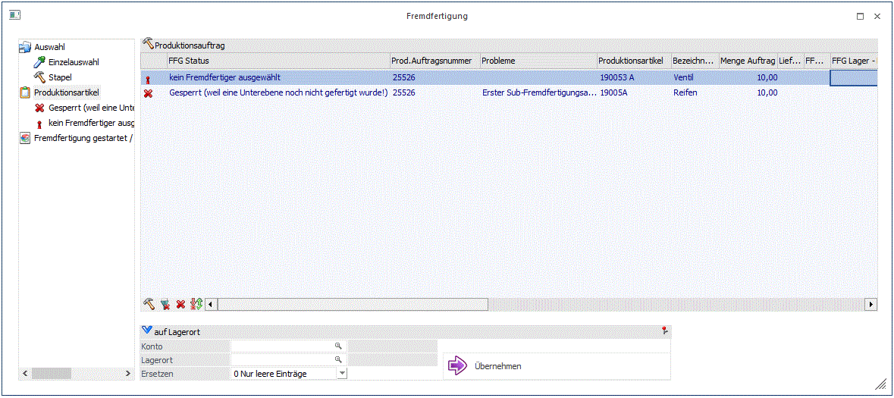
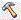
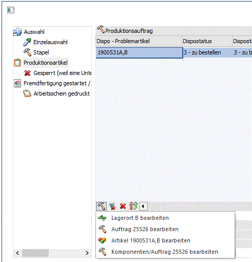
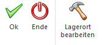

Mit dem Baum-Menüpunkt "Produktionsartikel" werden alle Arbeitsschritte unabhängig vom aktuellen Status angezeigt, die:
ü Von einem Fremdfertiger gefertigt werden sollen und
ü die den Selektionskriterien von der Stapel-Auswahl oder der Einzelauswahl entsprechen

Je nach vorhandenen Produktionsartikelzeilen (bzw. Fremdfertigungsstatus) können dann weitere Baummenü-Einträge vorhanden sein. Im jeweiligen Menüeintrag sieht man nur noch jene Zeilen, die dem entsprechenden FFG-Status haben. Zusätzlich ist der Tabelleninhalt auf die Informationen eingeschränkt, die für den FFG-Status relevant sind.
Die Tabelle enthält die folgenden Felder:
Ø FFG Status
In diesem Feld kann einer von den folgenden FFG-Stati für den Arbeitsschritt angezeigt werden:
ü gesperrt (weil eine Unterebene
noch nicht gefertigt wurde!)
Eine fremd zu fertigende Sub-Ebene ist noch
nicht endgemeldet. Der Arbeitsschritt ist daher noch nicht im Fenster
bearbeitet werden, d.h. es kann der Fremdfertiger noch nicht ausgewählt werden.
ü kein Fremdfertiger
ausgewählt
Der Arbeitsschritt ist für die Zuweisung eines Fremdfertigers
freigegeben (der noch nicht ausgewählt wurde).
ü Fremdfertiger
ausgewählt
Nachdem ein FFG-Lager für den Arbeitsschritt ausgewählt wird, wird
dieser Status vorerst im Feld angezeigt. Das FFG-Lager wird erst beim Speichern
mit dem OK-Button fest eingetragen. Mit diesem Status sind noch keine Änderungen
in der Stückliste des FFG-Arbeitsschritts vorgenommen worden.
ü Fremdfertiger eingetragen
Nach
dem Speichern mit dem OK-Button vom ausgewählten FFG-Lager wird dieser Status im
Feld für den Arbeitsschritt angezeigt. In der Stückliste des
FFG-Arbeitsschrittes wird bei diesem Status sowohl das Material als auch der
Arbeitsschritt auf das FFF-Lager automatisch aufgeteilt. (Hierbei wird
zusätzlich die Dispositionslage für den Arbeitsschritt ermittelt und im Feld
"Dispo-Problemartikel" angezeigt.)
ü Fremdfertigung gestartet/Arbeitsschein gedruckt/Arbeitsschein + Anweisung gedruckt
Nachdem die Lieferantenbestellung für den Arbeitsschritt erzeugt wurde (OK-Button nochmals drücken, Checkbox "Lieferbestellung" ist aktiviert), wird abhängig von der vorgenommen Selektionen im Bezug auf den Arbeitsschein als Anhang ein diesbezüglicher Status im Feld angezeigt.
ü Lieferschein/Rechnung
eingelangt
Nachdem die Lieferantenbestellung für den FFG-Arbeitsschritt zu
einem Eingangslieferschein bzw. -rechnung Nachdem umgewandelt ist, wird dieser
Status im Feld angezeigt. Dieser Status signalisiert, dass der
FFG-Arbeitsschritt endgemeldet werden kann.
Ø Produktionsauftragsnummer
Infofeld.
Ø Probleme
Die zugrundeliegende Ursache für den FFG-Status ist näher in diesem Feld beschrieben.
Wenn z.B. ein FFG-Arbeitsschritt den Status "gesperrt (weil eine Unterebene noch nicht gefertigt wurde!" aufweist, wird in diesem Feld ein Hinweis auf den Sub-Produktionsartikel angegeben, der noch nicht endgemeldet (gefertigt) wurde. , z.B. "Erster Sub-Fremdfertigungsartikel: 190053,B - Ventil Lagerort:B"
Wenn beispielsweise die Lieferantenbestellung für den FFG-Arbeitsschritt storniert wurde, wird in diesem Feld den Hinweis "Beleg wurde storniert" angezeigt.
Ø Produktionsauftragsnummer
In diesem Feld wird die Artikelnummer des (ggf. aufgeteilten) FFG-Arbeitsschritts angezeigt.
Ø Produktionsauftragsnummer
In diesem Feld wird die Artikelbezeichnung des (ggf. aufgeteilten) FFG-Arbeitsschritts angezeigt.
Ø Menge Auftrag
In diesem Feld wird die Produktionsmenge des FFG-Arbeitsschritts angezeigt.
Ø Lieferantenbeleg/FFG-Beleg erzeugen
Dieses Feld enthält eine Checkbox, womit entschieden werden kann, ob eine Lieferantenbestellung für den FFG-Arbeitsschritt beim Druck des Arbeitsscheins (evt. + Anweisung) erzeugt werden soll. Bei allen Zeilen, wo diese Checkbox aktiv ist, werden beim Speichern (F5 oder OK) einerseits die Produktionsbelege (siehe Einzelauswahl / Stapel) erzeugt und andererseits ein neuer Lieferantenauftrag generiert. Mit den Ribbon-Buttons "Alle", "Keine", "Umkehr" kann die Checkbox-Selektion dementsprechend geändert werden. Somit kann fallweise für einen FFG-Arbeitsschritt entschieden werden, ob der Beleg erzeugt wird oder nicht. Diese Checkbox ist nur sichtbar, nachdem der Fremdfertiger eingetragen ist und bevor die Bestellung erzeugt wurde.
Ø FFG-Lager
In diesem Feld kann das Fremdfertiger-Lager eingetragen werden. Es steht der Ausprägungsmatchcode mit einem Klick auf die Lupe bzw. der F9-Taste zur Verfügung. Ein Fremdfertiger-Lager muss ausgewählt werden, um den FFG-Arbeitsschritt in weitere Folge bearbeiten zu können.
Ø FFG-Lager - Bezeichnung
Infofeld. Bezeichnung des selektierten FFG-Lager.
Ø Kontonummer
In diesem Feld wird die Kontonummer des Kontos angezeigt, das beim FFG-Lager als "Fremdlager/Konto" hinterlegt ist.
Ø Fremdfertiger
Die Kontobezeichnung des Kontos angezeigt, das beim FFG-Lager als "Fremdlager/Konto" hinterlegt ist.
Ø Laufnummer
Die Beleglaufnummer von der erzeugten Lieferantenbestellung für den FFG-Arbeitsschritt ist in diesem Feld angezeigt.
Ø Anlieferungslager
Es kann das Anlieferungslager für den FFG-Arbeitsschritt in diesem Feld hinterlegt werden. Der Anlieferungslager kann im Stücklistenstamm für den FFG-Arbeitsschritt hinterlegt werden. Dieses Feld ist dann mit dem Anlieferungslager aus dem Stücklistenstamm vorbesetzt. Wenn ein Anlieferungslager beim FFG-Arbeitsschritt hinterlegt wurde, wird bei der Endmeldung der gefertigte Arbeitsschritt automatisch am FFG-Lager zu- und abgebucht und dann gleich am Anlieferungslager zugebucht. Somit wird die Lagerbewegung vom FFG-Lager zum Anlieferungslager dargestellt. Ohne Angabe vom Anlieferungslager wird der FFG-Arbeitsschritt bei der Endmeldung ohne weitere automatische Umbuchung auf das FFG-Lager zugebucht.
Ø Anlieferungslager - Bezeichnung
In diesem Feld wird die Bezeichnung des selektierten Anlieferungslagers angezeigt.
Ø Dispostatus
In diesem Feld wird der allgemeine Dispostatus des FFG-Arbeitsschrittes angezeigt.
Ø Überfällig
In diesem Feld wird ein Symbol angezeigt, wenn das Lieferdatum des FFG-Arbeitsschritts schon überfällig ist.
Ø Dispo - Problemartikel/ Dispostatus / Dispostatus - aktueller Lagerstand
Diese 3 Spalten betreffen die Verfügbarkeit der Komponenten am FFG-Lager des FFG-Arbeitsschrittes. In der Spalte Dispo-Status wird angezeigt, ob die Komponenten auf FFG-Lager sind oder noch rechtzeitig umgebucht werden können. Dabei gibt es folgende Stati:
ü
1 -
O.K.
D.h. alle erforderlichen Komponenten sind schon auf
(FFG-)Lager.
ü
3 - zu
bestellen
D.h. einige der Komponenten sind nicht auf FFG-Lager können bzw.
sollen aber noch zeitgerecht umgebucht werden
ü
4 - nicht
verfügbar
D.h. einige der Komponenten sind nicht auf Lager und können auch
nicht mehr umgebucht werden.
ü 7- kein Fremdfertiger-Lieferant gefunden
D.h. der Artikel ist nicht verfügbar, weil ein gültiger Fremdfertiger eingetragen ist. Das Programm kann nicht ermitteln, ob der Artikel rechtzeitig umgebucht werden kann.
In der Spalte Dispo-Problemartikel wird der (erste gefundene) Artikel angezeigt, der am FFG-Lager nicht verfügbar ist.
Ø Erstmögliches Datum
In dieser Spalte wird der früheste Liefertermin des FFG-Artikels angezeigt (bzw. das Lieferdatum, das in der Lieferantenbestellung hinterlegt ist).
Ø Arbeitsschritt
In diesem Feld wird die Arbeitsschrittnummer des FFG-Arbeitsschritts angezeigt.
Ø Produktionsbelege (Symbol) / Art des Dokuments
Im Feld wird mit einem grünem bzw. roten Kugel angezeigt, ob die Produktionsbelege für den FFG-Arbeitsschritt gedruckt sind oder nicht. Im zweiten Feld wird angegeben, ob nur der Arbeitsschein oder ob sowohl Arbeitsschein als auch die Arbeitsanweisung angedruckt wurden.
Auf Lagerort
Ein Fremdfertiger kann in diesem Bereich für alle FFG-Arbeitsschritte, die vom Status her bearbeitet werden können. Der Fremdfertiger kann über das Konto bzw. alternativ über den Lagerort ausgewählt werden.
Mit einem Klick auf Button "Übernehmen" wird das Fremfertigerlager ins Feld FFG-Lager bei den bearbeitbaren Arbeitsschritten hinzugefügt.
Ø Ersetzen
Diese Option bietet zwei Selektion, um die Art der Übernahme vom FFG-Lager zu bestimmen:
ü
0 nur leere
Einträge
Mit dieser Selektion wird das FFG-Lager nur für alle (nicht
gesperrte) Arbeitsschritte in der Tabelle eingetragen, die noch kein Lager
zugewiesen bekommen haben.
ü
1 Alle
Einträge
Mit dieser Selektion wird das FFG-Lager für alle (nicht gesperrte)
Arbeitsschritte in der Tabelle eingetragen, egal ob sie ein Lager schon
zugewiesen bekommen haben oder nicht.
Tabellenbuttons
Ø

Lagerort bearbeitenWenn auf diesen Button geklickt wird, werden vier verschiedene Optionen angeboten, womit Stücklistenkomponenten des FFG-Arbeitsschrittes über das Fenster "Lagerorte bearbeiten" von einem Lager auf das selektierten FFG-Lager umgebucht werden können.

ü Lagerort xx
bearbeiten
Bei Anwahl von dieser Option werden alle Dispositionszeilen für das angegebene FFG-Lager xxxx
im Fenster "Lagerorte
bearbeiten" fürs Umbuchen auf das FFG-Lager
vorgeschlagen.
ü Auftrag xxxxxx
bearbeiten
Bei Anwahl von dieser Option werden alle Dispositionszeilen für den angegebenen
Produktionsauftrag xxxx im Fenster "Lagerorte bearbeiten"
fürs Umbuchen auf das FFG-Lager vorgeschlagen.
ü Artikel
xxxxxx,xx bearbeiten
Bei Anwahl von
dieser Option werden nur die
Dispositionszeilen von der selektierten Tabellenzeile im Fenster
"Lagerort bearbeiten" fürs Umbuchen auf das FFG-Lager vorgeschlagen.
ü
Komponenten/Auftrag
xxxxxx bearbeiten
Bei Anwahl von
dieser Option werden nur die "Komponenten", d.h. Rohstoffteile, von allen Dispositionszeilen für den angegebenen
Produktionsauftrag im Fenster "Lagerort bearbeiten" fürs Umbuchen auf das
FFG-Lager vorgeschlagen.
Buttons

Ø OK
Über den OK-Button kann einerseits den ausgewählten Fremdfertiger als "eingetragen" gespeichert werden und anderseits kann die Lieferantenbestellung inkl. Produktionsbelege für Arbeitsschritte mit eingetragenem Fremdfertiger erzeugt werden. Mit dem Klick auf den OK-Button werden alle Tabellenzeilen in dieser Hinsicht gespeichert.
Ø Ende
Das Fenster kann mit diesem Button geschlossen werden. Nicht gespeicherte Einstellungen (z.B. noch nicht eingetragene Fremdfertiger) werden nicht gespeichert.